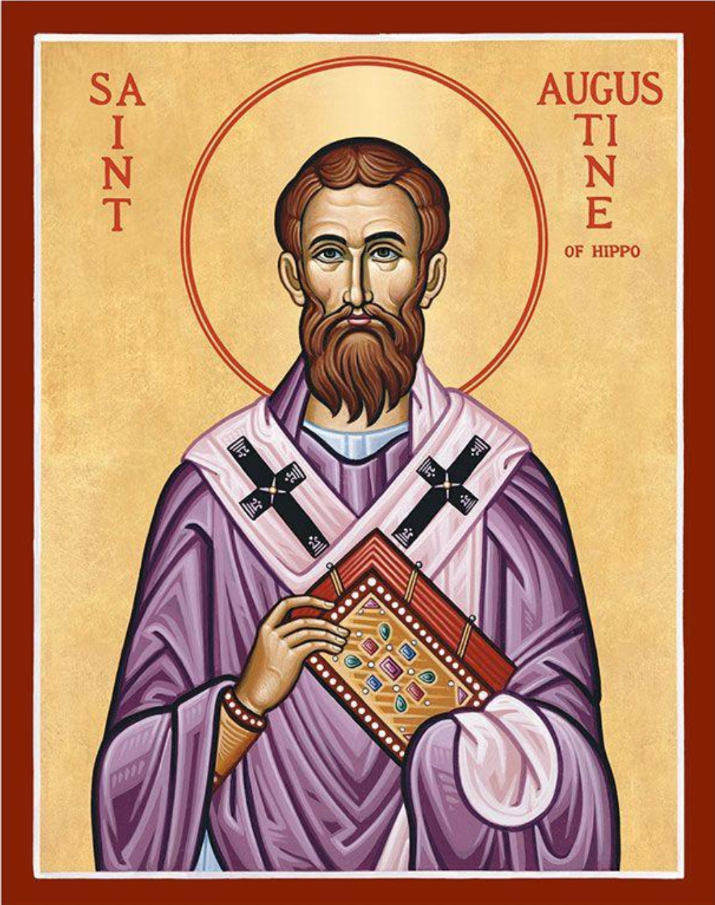

| Soli Deo gloria |  |
Solus Christus |
|---|
Welcome to Aurelius, Charlie Cornford's repository of articles, bible studies and books prepared over the years and now being made available to anyone who wishes to read them. This is still a work in progress and, if I can maintain the momentum, will expand with time. Reference to this website usually comes about in theological conversation with friends and acquaintances and not through the search engines. So if you are reading this I have probably met you and considered that one or more of the monographs would be of interest to you. If you have any questions feel free to contact me on pccor601@gmail.com.
New Testament Revelation |
This article, initially published in the Australian Presbyterian (AP) in 2008 under the title "The Superiority of New Testament Revelation", was requested by the editor of AP as a follow up to a book written by Peter Bloomfield on the subject of knowing God's will. The article is a defense of Cessationism and focuses on Hebrews 1:1,2 and 1 Corinthians 13:8-13 as exegetical proof of the cessationist position. |
||
New Testament Worship |
This article was initially published in the Queensland Reformed Journal in 1990 and resulted in a change in service formats throughout many of the congregations of the Queensland Presbyterian Church up to the present day. The main thesis of the article is that the purpose of the public assemblies of the New Testament church is to edify the congregation and not to engage in cultic worship. The article relies heavily on the apostle Paul's instructions to the Corinthian Church on the content of their public assemblies. |
||
Overcoming Anxiety |
Overcoming Anxiety was written at a time when the author himself was experiencing a period of anxiety, and, rather than turn to scripture for his own comfort only, decided to share that comfort with others in a monograph on how to overcome anxiety. The article relies heavily on such passages as Philippians 4:6-8; Matthew 10:26-31 and 1 Peter 5:6-7 and casts anxiety as a sinful habit and able to be mitigated through meditation on scripture. |
||
Sovereign Grace |
The material presented in this booklet is a collection of posts mostly submitted to Facebook over recent years of matters that surfaced in a weekly bible study which I have had the privilege of leading. The topics are not ordered in any logical manner but are presented in the order in which they arose. They are, in my opinion, topics that are likely to arise in other bible studies, especially those which touch on the matter of sovereign grace and Reformed theology in general. So it seemed a good idea to put them together into a single book for future study in their own right. |
||
The Gospel in Plain Language |
The Gospel in Plain Language was written as a gospel tract for the non-Christian reader beginning with the assertion that the non-Christian is not able to make him/herself a Christian. The approach here is modelled on the approach of Jesus in his discussion with Nocodemus (John 3:1 ff) where Jesus sets out to show Nicodemus that he cannot save himself. The purpose of the tract is to give the Holy Spirit the naked truth upon which to work in the heart of the unbeliever and not to turn the unbeliever away. This approach is diametrically opposed to that which is employed by many evangelical preachers today who try to soften the hard truths of the gospel in order to bring their unsaved hearers into the church. Does God love everybody and have a wonderful plan for their lives? Read the tract; you will be surprised. |
||
Understanding the Gospel |
Understanding the Gospel and How It Works was written and published in 2023. This book is addressed to Christians and is an in-depth explanation of what exactly the gospel is and how it should be presented. It begins with the problem of enmity between God and the sinner and proceeds to the sinful nature of fallen man, the trinitarian work of God's saving plan and the steps needed to explain the gospel to the unbeliever. Where theological terminology is used, marginal explanations are given. |